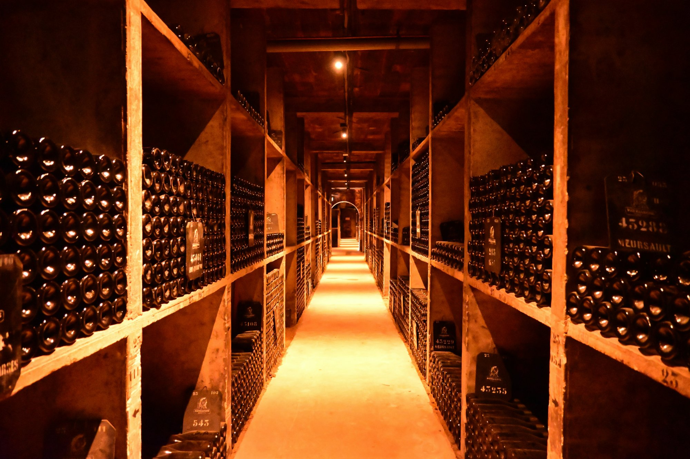

Custom wine cellars for Miami estates — design, climate and installation

A well-designed wine cellar is one of the most personal and enduring upgrades you can make to a luxury home. In Miami, where the climate presents specific challenges for wine storage, getting the design and engineering right matters more than almost anywhere else.
This guide covers everything a luxury homeowner in Miami needs to know before building a custom wine cellar — from climate control and location to design options, capacity and finding the right specialist.
Why Miami's climate makes cellar design critical
Wine is sensitive to temperature fluctuation, humidity and light. In most of the world's temperate climates, building a proper wine cellar is a straightforward exercise. In Miami, the challenge is significantly greater.
South Florida's ambient temperatures — regularly above 85°F in summer — and high humidity mean that passive wine storage simply does not work. Any serious wine cellar in Miami requires a dedicated mechanical cooling system capable of maintaining 55–58°F and 60–70% relative humidity year-round, regardless of outdoor conditions. This is not a point of negotiation — without it, wine deteriorates rapidly.
In Miami, the cooling system is the most critical component of a wine cellar. Getting the engineering right is exactly why using a specialist — found through an estate concierge — makes such a difference. A beautiful room with inadequate climate control will destroy your collection. Get the engineering right first, then design around it.
Cooling system options
There are three main approaches to climate control for a Miami wine cellar. A through-wall cooling unit — similar in concept to a through-wall air conditioner — is the simplest solution and appropriate for smaller cellars up to around 1,000 bottles. These units are self-contained, relatively affordable and straightforward to install.
For larger cellars or those in more demanding locations, a split system — with the cooling unit inside the cellar and a condenser outside — is more powerful, quieter and longer-lasting. It requires an outdoor condenser location and professional installation, but delivers better performance and reliability.
For the most demanding installations — large cellars, very warm locations or where noise is a concern — a ducted glycol cooling system is the premium choice. These systems use a remote chiller unit connected to cooling coils inside the cellar, are virtually silent and can maintain precise temperature control even in extreme conditions.
Location within the home
Choosing the right location for your cellar is as important as the cooling system. The ideal spot minimises the thermal load — away from exterior walls with direct sun exposure, not above a garage or mechanical room, and in an interior space where ambient temperature fluctuations are smallest.
Basements are rare in Miami's construction due to the water table, so most cellars are built in interior rooms, under staircases, in converted closets or in purpose-built spaces adjacent to the dining room or kitchen. A good wine cellar specialist will assess candidate locations before recommending where to build.

Proper climate control and racking design are the foundations of a serious wine cellar.
Design and racking options
Once the engineering is resolved, the design is where the cellar becomes personal. The most enduring cellars combine practical storage capacity with a visual quality that makes the room a pleasure to be in — many of the best Miami cellars double as private tasting rooms or entertaining spaces — a natural companion to a home theater or outdoor entertaining setup.
Racking materials range from traditional redwood or mahogany — which age beautifully and are naturally resistant to humidity — to metal, acrylic and glass systems that suit more contemporary interiors. Capacity per square foot varies significantly by racking type and configuration, so working with a specialist who can optimise the layout for your collection size is worthwhile.
Lighting should be UV-free — standard LED or fibre optic — to protect the wine. Flooring options include stone, tile, brick and reclaimed wood, all of which handle humidity well. A tasting table or island, wine service equipment and a display section for your most prized bottles complete a properly conceived cellar.
Cost expectations
A custom wine cellar in a Miami luxury estate typically costs between $20,000 and $150,000 depending on size, materials, the cooling system specified and the level of finish. A well-designed cellar with custom racking, proper climate control, quality finishes and capacity for 500–1,000 bottles typically falls between $30,000 and $80,000. Larger rooms with premium materials, tasting areas and high-end cooling systems push costs higher.
How much does a custom wine cellar cost in Miami?
A custom wine cellar typically costs between $20,000 and $150,000. A well-designed cellar with custom racking, climate control and quality finishes for 500–1,000 bottles typically falls between $30,000 and $80,000.
What temperature should a wine cellar be in Miami?
Wine should be stored at a consistent 55–58°F (13–14°C) with relative humidity between 60–70%. In Miami's climate, maintaining these conditions requires a dedicated mechanical cooling unit — passive storage is not viable in South Florida.
Do I need a cooling unit for a wine cellar in Miami?
Yes, absolutely. Miami's heat and humidity make mechanical climate control essential for any serious wine storage. A properly specified cooling unit is the most critical component of a Miami wine cellar.
What is the best location for a wine cellar in a Miami home?
An interior space away from exterior walls with direct sun exposure and away from heat sources. Basements are rare in Miami, so most cellars are built in interior rooms, under staircases or in purpose-built spaces adjacent to the dining room or kitchen.
A private concierge for luxury estate owners.
Estate Circle connects luxury homeowners with the best vetted specialists for high-end estate projects — custom pools, home theaters, smart home systems, wine cellars, outdoor kitchens and more. We find the right people for your specific project, brief them fully before they visit, and stay involved throughout so you never have to chase a contractor.
Planning a wine cellar at your estate?
Contact us and we'll find the best-matched wine cellar specialists for your project, coordinate site visits, and stay involved from design to completion.
Contact UsNo commitment. We'll follow up within 24 hours.